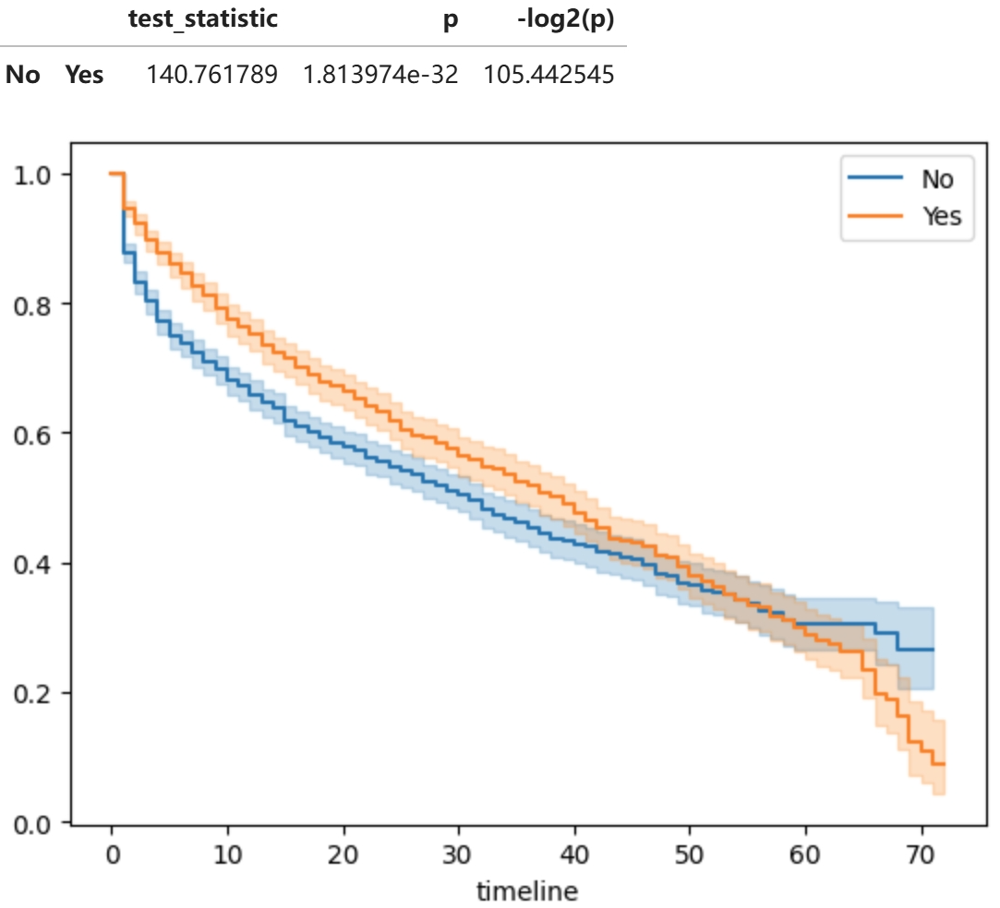

基于虚拟电信公司数据的生存分析报告
1. 总述
生存分析是一种统计方法，主要用于分析时间到特定事件发生的数据，核心目的是估算和比较不同组的生存概率
本次生存分析针对虚拟电信公司数据，目的是预测客户在一定时间内的生存（未流失）概率，特别考虑了在某些条件下客户是否会加速流失的问题，并以此评估客户生涯价值
2. 数据导入
建立数据库 `survival_analysis`，并在其中建立原始数据表 `bronze_customers`，和经过处理的数据表 `silver_monthly_customers` 向数据库的 table 导入数据，以便开展之后的生存分析：

其中，`Tenure` 与 `Churn` 两列数据对于生存分析非常重要
- Tenure（服务期限）：客户与公司保持订阅关系的时间
- Churn（客户流失）：一个布尔值，表示客户是否仍然是订阅用户
3. Kaplan-Meier 模型
用 Kaplan-Meier 构建生存概率曲线，曲线整体较为平滑，在 timeline 的初期和默契，生存概率下降速率较大
由 Kaplan-Meier 模型计算得生存时间中位数为 34，即总体客户的取消订阅的时间中位数为 34 个月
接下来评估协变量水平的生存概率，Kaplan-Meier模型适用于单变量分析，这里考虑在单变量取不同值时，各组的生存曲线是否有显著的不同，理想情况（零假设）为各组之间有显著的差异
绘制按各协变量分组的 Kaplan-Meier 曲线，并进行 Log-rank 检验，图中曲线有明显区别或Log-rank 检验p值小于0.05，表示该协变量取值显著影响生存概率曲线
gender：两组曲线十分接近，用Log-rank进一步检测，零假设为两组曲线无显著性差异，gender对应的p值为0.2045，大于0.05，当显著性水平为0.05时，我们可以认为这两个分组在统计学上是等效的
onlineSecurity：各曲线间有明显差异，可以认为这种该协变量取值差异会显著影响生存概率曲线
seniorCitizen：两组曲线十分接近，但Log-rank 检验显示有明显差异，可以认为这种该协变量取值差异会显著影响生存概率曲线

partner：各曲线间有明显差异，可以认为这种该协变量取值差异会显著影响生存概率曲线
dependents：各曲线间有明显差异，可以认为这种该协变量取值差异会显著影响生存概率曲线

phoneService：两组曲线十分接近，用Log-rank进一步检测，phoneService对应的p值为0.3776，可以认为这两个分组在统计学上是等效的

multipleLines：据图表显示，可以认为这种该协变量取值差异会显著影响生存概率曲线
internetService：据图表显示，可以认为这种该协变量取值差异会显著影响生存概率曲线

streamingTV：据图表显示，可以认为这种该协变量取值差异会显著影响生存概率曲线
streamingMovies：据图表显示，可以认为这种该协变量取值差异会显著影响生存概率曲线
onlineBackup：据图表显示，可以认为这种该协变量取值差异会显著影响生存概率曲线

deviceProtection：据图表显示，可以认为这种该协变量取值差异会显著影响生存概率曲线

techSupport：据图表显示，可以认为这种该协变量取值差异会显著影响生存概率曲线
paperlessBilling：据图表显示，可以认为这种该协变量取值差异会显著影响生存概率曲线

paymentMethod： “Bank transfer (automatic)” 和 “Credit card (automatic)” 的取值分组间没有显著的差异，而其他取值分组间的差异均会显著影响生存概率曲线
上述操作评估了协变量水平的Kaplan-Meier生存曲线，结果显示：`gender`、`phoneService`，以及`paymentMethod`的 “Bank transfer (automatic)” 和 “Credit card (automatic)” 的分组间没有显著的差异，这几项的取值可能不会显著影响用户的生存曲线，而其他列数据均对生存曲线有显著性影响
除此之外，还可以进一步提取指定协变量取值的生存概率，用于后续分析，输出结果如图所示：
Kaplan-Meier适用于单变量分析，对于影响客户生存曲线的多变量分析任务，由下一节Cox Proportional Hazards 模型完成